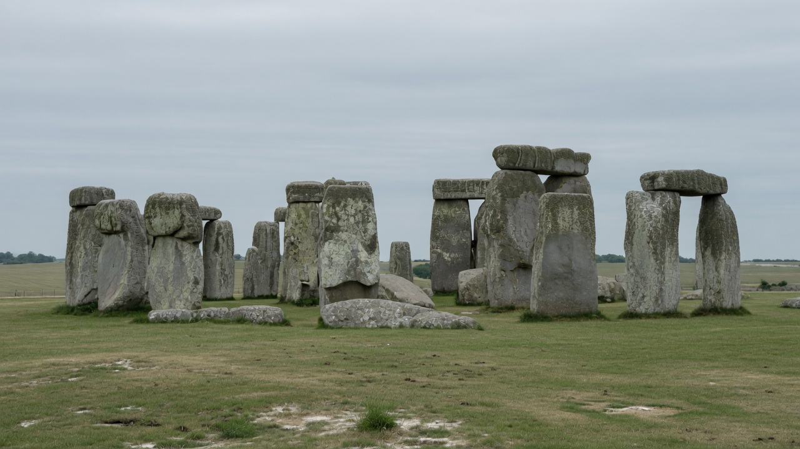

The climate at Stonehenge, 5000–2000 BC
The winters were like now. They were not a road.
See the proxies for every series, citation and uncertainty band.

Ranges include published reconstruction uncertainty across four millennial slices (5050, 4050, 3050, 2050 BC). Mauri et al. 2015 pollen-grid anomalies for the 1° cell near 51°N, 2°W, added to Boscombe Down 1971–2000. Annual temperature error is borrowed from the summer standard error. Annual rain assumes spring and autumn track the mean of winter and summer. This is not a weather diary. See the proxies.
Gold’s formula, on the Avon
P = A h² → 40 t, river ice 107 cm
Canadian ice-road practice (Gold 1971): load in kilograms, thickness of good clear floating ice in centimetres. A ≈ 3.5 on a river, 4 on a typical lake. A metre of ice wants on the order of 4,000–5,000 freezing-degree-days. A Wessex January whose millennial mean is about 3 °C does not supply that. Lying snow on the downs (Hill 1961) is a different, smaller claim — sledging on snow on land, not a frozen river as a road.
| Load | A | Ice |
|---|---|---|
| 20 t sarsen | 3.5 | 76 cm |
| 40 t sarsen | 3.5 | 107 cm |
| 40 t | 4 | 100 cm |
| 50 t | 3.5 | 120 cm |
Four millennial slices, not a diary
Central values only. Boscombe Down 1971–2000 baseline: annual 9.85 °C, January 4.0 °C, July 16.75 °C, rain 736 mm. Today (1991–2020): 10.4 °C, 4.6 °C, 17.1 °C, 783 mm.
| Slice | Annual °C | July °C | January °C | Rain mm |
|---|---|---|---|---|
| 5050 BC | 9.6 | 17.4 | 2.7 | 731 |
| 4050 BC | 10.1 | 16.7 | 4.2 | 816 |
| 3050 BC | 9.6 | 16.7 | 3.8 | 873 |
| 2050 BC | 9.6 | 16.5 | 4.0 | 838 |
The dates do not make a single story
- ~3000 BC Stonehenge I. Ditch, first bluestones. Neolithic builders.
- ~2500 BC Sarsen circle and trilithons. Still before the 4.2 ka label.
- ~2450–2400 BC Beaker arrivals. Ancestry replacement begins. Genetic fact. The British climate series do not show a catastrophe that explains it.
- ~2200 BC 4.2 ka interval as a global drought label. Roland et al. 2014: no coherent British–Irish peat event. Fenland yew woodland ends in wet / inundation terms, not a freeze.
What the graphs are not
A frozen Avon
Not a planning climate for 20–50 t sarsens. Gold wants about a metre of good ice. These winters do not grow it on the river.
Crash, then stones, then Beakers
Wrong order. The big stones are earlier than 4.2 ka. Do not read a red crash at 2400 BC off the Charman 2006 peat stack: that cliff is low replication at the start of the stack, a plotting artefact.
Pleistocene delivery
A different debate, a different millennium. These graphs are Holocene climate. They are the wrong tool for ice-sheet geology.
What they are
Moisture more than temperature. Millennial slices, not weather. Uncertainty is the point: pollen transfer functions are coarse; after about 4000 BC, clearance mixes a human signal into southern English pollen; a wet decade is invisible inside a thousand-year mean. There is no thermometer on Salisbury Plain in the Neolithic. Four slices and a stack of peat, chironomid, oak and speleothem records are what exist.
Replacement is genetic fact. A British climate catastrophe that explains it is not in these series.